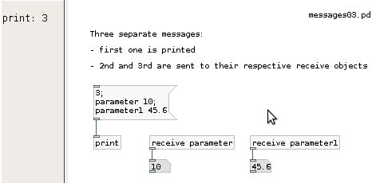

Messages
Pd's objects intercommunicate using messages, which typically flow from an outlet of one object to an inlet of another through black lines called wires, or patch cords. These messages are usually a request to do something, like open a file, compute a sum, or store some data. Apart from audio signals all other data in Pd are messages.
Anatomy of a message
Messages are made up of one or more pieces of data called atoms. There are several atom types that may be used in Pd, but the two most important ones are:
- numeric - a number such as "3," "4.5," or "5.55556e+06"
- symbolic - typically, a word that cannot be interpreted as a number and that contains no white space, such as "open," "pitch," "file001," "reset"
Messages in Pd begin with a symbolic atom, called the selector, which may be followed by zero or more atoms, referred to as the elements of the message (all separated by white-space). Aside from two convenient exceptions covered below, Pd messages follow adhere to the following form: selector element1 element2 etc...
The selector of the message tells the object what to do-- that is, when a message arrives at one of its inlets, the object checks the selector and chooses an appropriate action, or method, in response. The particular action depends on what the object was designed to do. For example, an object may accept messages consisting of the selector "set" followed by one numeric atom, like "set 12," to store the number 12. Another object might accept a message with the selector "clear" (with no elements) as a way to "forget" the current data stored in the object. (Note: you can usually find out which messages an object accepts by right-clicking it and choosing "Help.")
All Pd objects will send an error to the console if you attempt to send a message that the object doesn't understand. For example, the [change] object accepts "float" and "set" messages, but if you try to send the message "elvis is king," an error will let you know that the selector "elvis" isn't understood: "error: change: no method for 'elvis'." For secondary inlets, the error message will give you a hint as to the correct selector, like: "error: inlet: expected 'float' but got 'elvis'."
Standard Message Types
There are many different people who have created and continue to create objects for Pd, designing them to accept messages with whatever selectors they find appropriate to the task at hand (open, vibrato, learn, kill, stop, etc.). So you might wonder how exactly the user is supposed to keep track of all the messages a given Pd object understands. Luckily, there are several standard message types built into Pd:
- float message - the word "float" with one element that is a number, like "float -5." Also known as floats (floating point numbers).
- symbol message - the word "symbol" followed by a word. E.g., "symbol foo."
- list - the word "list" followed by groups of numbers and/or symbols and/or pointers.
- bang - the single word "bang." Often used simply to trigger an object to perform an action.
- pointer - references to data stored in graphical data structures.
The standard messages shown above make it easy to perform common tasks in Pd-- for example, if you know that a certain object performs simple arithmetic, you can guess that it will accept float messages as input.
In the example below, notice that Pd provides a shortcut for typing both float messages and lists of numbers; you can leave off both the "float" and "list" selector and the objects will still accept and understand them. Since so much of Pd is basically about passing numbers around, these "implicit" float and list messages allow you to create your patch with less typing.
Message Boxes
Messages can go between objects directly - as they do in the bottom two rows of each group shown below - or be sent from message boxes (and pass through them, as we'll see later). The message box allows the user to type a message that may be sent to an object by clicking it with the mouse. It also allows the user to view the message directly.
Message boxes also allow the user to send more than one message to an object. If you put a comma at the end of one message, you can then create a separate message which will be sent immediately after the first message. The comma breaks the message, creating a new instance.

The message box also has an advanced feature: it allows you to send messages without wires by using a semicolon. Like commas, semicolons can be used to create separate messages. However, all messages after the first semicolon will be sent to a destination specified by the selector of the message, which below is the [receive] objects name "parameter" and "parameter1." (Messages may also be sent to the Pd engine in this way by using the selector "pd" to specify the destination). This technique is usually used to send several different messages to different destinations. (Note: you can use a leading semicolon if you don't want to send anything to the outlet of the message box.)

Special Methods of Message Boxes
Just like most other Pd objects, message boxes also react in special ways when they receive messages starting with special selectors. For example sending a message starting with the selector-word "set" to a message box will set the content of this message box the whatever follows the "set"-selector. "set 1 2 3" for example will erase the previous content of the message box receiving this message, then fill it with "1 2 3".
There are many more special methods for message boxes, like "add", "add2", "adddollar" and so on. Please check the help file for message boxes for details. Changing message boxes by these method- or meta-messages dynamically is a powerful feature of Pd, but it can also be a cause for subtle bugs in your patches if you aren't careful. If you want to avoid accidentally deleting the content of a message box, you can guard it with a [list] object in front of the box. This will convert all messages to proper list-messages that have a selector "list". a "set x" sent through [list] will become a "list set x" and it will not delete the message box content anymore. Of course, if you actually want to set the message box to "x" don't add the [list] or add a [list trim] after it as well.
Packing elements and variables into a list
You can create more complex messages by joining several elements together as a list - the most current object for that is [pack]. Elements may be numbers (specified by "f"), symbols ("s"), or a mixture of the two.
If you want to work with a list that combines fixed and variable elements, you can use dollarsign variables in a message box. These will get filled in by the corresponding elements from the message that arrives at the inlet. will take the first element, the second, and so on. Note that refers to the first element, not the selector-- with the message "frequency 660" would be "660." Also, remember that "13" is shorthand for "float 13," so in the example below the message "time " will expand to "time 13." Finally, note that "symbol end1" is what comes out of the symbol box (which shows how symbol messages can be useful).

Combining the power of [pack] with variables, it's possible to build complex commands for your patches:

Deconstructing messages: unpack and route
After you've built and formatted the commands you need, in the next part of your patch you can decide where to send them. First we can look at [pack]'s evil twin, [unpack]. As the name says, [unpack] separates a list into it's individual elements. This can be useful after you created your list command, to distribute it into the several parts of your synthesizer patch. Be sure to match the creation parameters with the format of the list you're expecting to receive.

Besides deconstructing your messages, you can also sort them qualitatively, through string comparison. For that we use [route]. With [route] you can send different messages to the same input, and sort them out quite easily.
The [route] object has two modes: the first routes messages according to the selector; this mode is set whenever you provide symbolic atoms as the arguments, like [route dog cat]. In this mode, you could use the object to route messages according to the built-in message types - bangs, floats, symbols, lists, etc.:

The [route] object typically trims off the atom that is being used for the comparison (except for float and symbol messages). In "selector mode," you can use the message selector as a kind of "filter" to channel the remaining element to a specific outlet, as below:
Below is an example of the [route] object's "float mode," where list messages are selected according to the first element (so that you can easily route lists of numbers). This mode is set by using float parameters with [route], such as [route 1 2 3]. (Remember that the message "1 20" is a shorthand for "list 1 20.")
If you just send [route] a message consisting of a single selector with no elements, you can use it just to trigger events. In this case, the output is only a bang.
And the grand finale: combine all objects (and variables) to create your own complex commands, and distribute them through the various parts of your instruments - all in the same patch: